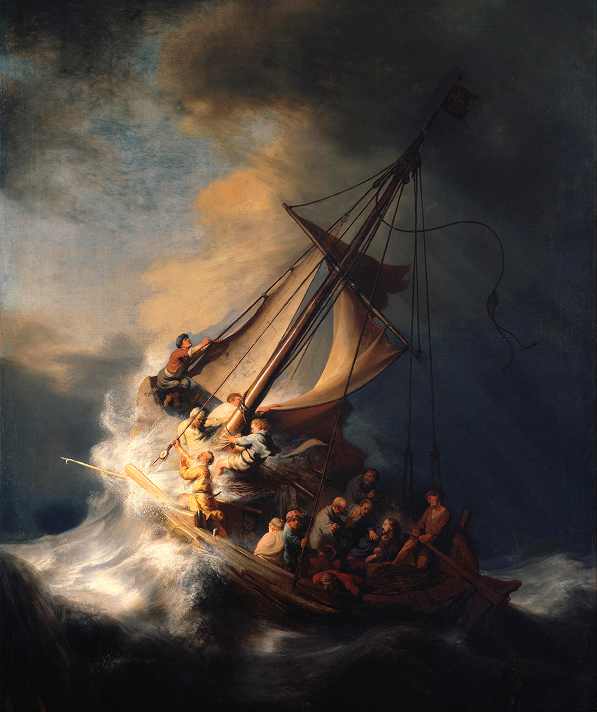
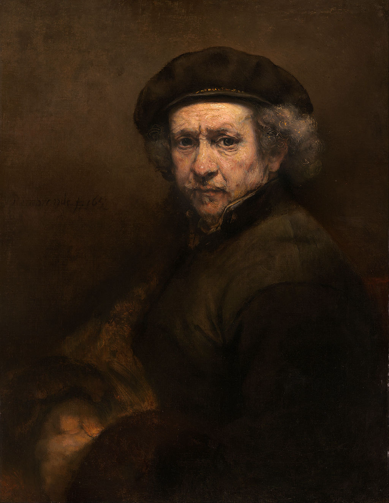

The Storm on the Sea of Galilee
Rembrandt

The Storm on the Sea of Galilee
Rembrandt
1633
The painting, in vertical format, shows a close-up view of Christ's disciples struggling frantically against the heavy storm to regain control of their fishing boat. A huge wave beats the bow and rips the sail. One of the disciples is seen vomiting over the side. Another one, looking directly out at the viewer, is a self-portrait of the artist. Only Christ, depicted on the right, remains calm.
GO TO SOURCE